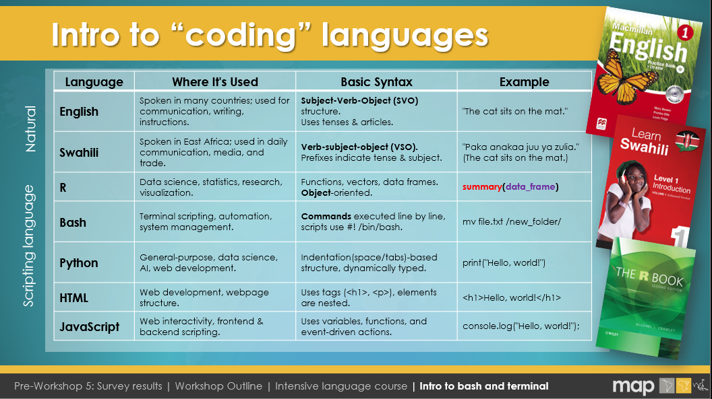
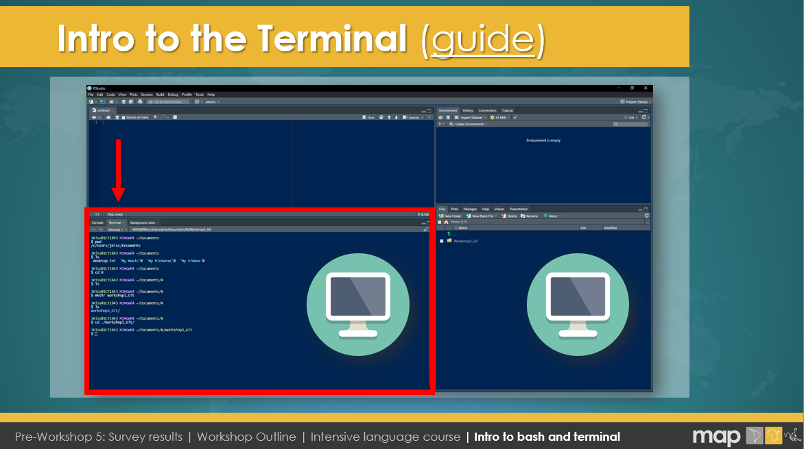

The world of coding — a place where you’ll speak a language that computers actually understand. Whether you’re here for the thrill of data analysis, building websites, or automating tasks (because who doesn’t love making a machine do all the work?), you’re in the right place.
Watch the recording from this session from 24 Feb 2025 and checkout the related slides within our Google Drive.
Imagine coding as a global journey, and along the way, you’ll meet some quirky languages. Each one has its own vibe and culture. Whilst you'll probably think that you only need to learn how to use R, this course is designed to give you the confidence to also jump onto other languages without fear (or more like: excitement!). So, whilst learning R is a priority to get you coding and plotting (figures and your research), know that there are other languages out there too.
Now, I know coding can sound a bit intimidating at first. You might think you're going to be staring at a screen of endless gibberish. But here’s the secret: every coder felt that way at first. Coding is just giving instructions, one step at a time. And trust me, your computer really wants to listen. It’s like a very obedient puppy—sometimes it gets confused and crashes, but it’s always trying its best.
Coding is basically typing stuff and seeing if it works. Spoiler: it won't work the first time. But that’s part of the fun! Every error message is just your computer’s way of saying, “Hey, I don’t understand what you want. Can you explain it better?” So, embrace the typos and bugs—they’re your guides to mastery. (Just please do not break this website when publishing your assignments as JK is definitely not a Master - yet.)
Whether you’re crunching data, automating tasks, or building a website, most programming languages have similar building blocks. Let’s break down some basic syntax:
Commands are the instructions you give to a computer. They tell the machine what to do, like printing text, loading data, or performing calculations.
print("Hello, world!") – This command prints "Hello, world!" to the console.git push origin main – This command pushes your local code changes to the main branch on a remote Git repository.dir – Lists all the files and directories in the current folder.ls – Similar to Command Prompt’s `dir`, this lists all files and directories in a folder.<p>Hello, world!</p> – This command creates a paragraph element that displays "Hello, world!" on a webpage.Assigning values is how you store information in a variable, which can then be used later in your code. You can think of variables like labeled boxes that hold data.
my_data <- c(1, 2, 3, 4, 5) – This assigns a vector of numbers to the variable my_data.USERNAME="JohnDoe" – Assigning a value to an environment variable in a Git Bash script.set NAME=John – Creates a variable called NAME with the value John.my_var="Hello" – Assigns the string "Hello" to a variable called my_var.<script>var name = "John";</script>.Formulas (or operations) perform calculations or manipulate data. It could be simple math, string manipulation, or more complex functions depending on the language.
sum(c(1, 2, 3)) – This sums up the numbers 1, 2, and 3 and returns the result.echo $((3 + 4)) – This outputs the result of 3 + 4.set /a sum=5+10 – This adds 5 and 10 and stores the result in a variable sum.echo $((2 * 8)) – Multiplies 2 by 8 and prints the result.<script>var result = 5 + 3;</script>.Comments are notes in your code to explain what’s happening. They’re super useful for reminding yourself what you were doing, or explaining your code to someone else. Comments are ignored by the computer when running the code.
# This is a comment in R – Everything after the # symbol is ignored by R.# This is a comment in Git Bash – Just like in R, the # symbol is used for comments.REM This is a comment in Command Prompt – The REM keyword is used for comments in batch scripts.# This is a comment in Linux – Like in Git Bash, # is used for comments.<!-- This is a comment in HTML --> – HTML comments are written between <!-- and -->.With these basic building blocks, you're on your way to understanding how to interact with different coding languages. Every language has its own quirks, but the underlying logic is the same: give clear instructions, store and manipulate data, and document your work!

Welcome to your guide on using Bash and Git within RStudio! In this section, we’ll explore how to run Bash commands using RStudio’s integrated Terminal and how to set up Git for version control—linking your work to GitHub for seamless collaboration.
Bash (Bourne Again Shell) is a powerful command-line interface that lets you interact directly with your computer’s operating system. RStudio’s Terminal (found under Tools > Terminal > New Terminal) is your gateway to running Bash commands, managing files, and automating tasks.
💡 Think of the RStudio Terminal as a "secret door" in RStudio that lets you talk directly to your computer, just like the Command Prompt on Windows or the Terminal on macOS/Linux.
Basic Bash Command Structure:
command [options] [arguments]
mv -v ~/data_backup /mnt/backup/ – Moves your data_backup folder to a new destination with verbose output.Rscript analysis.R – Runs an R script directly from the terminal.free -h – Displays system memory usage in a human-readable format.Use the Terminal in RStudio like you would a traditional Command Prompt or macOS/Linux Terminal—it's your secret door to a world of efficient coding!
Although people often say “Git” and “GitHub” in the same breath, they are not the same thing:
In other words, Git is the tool that handles version control on your computer, while GitHub is the service that allows you to upload (push) your local Git repositories and collaborate with others online. You can use Git without GitHub (e.g., on your own server or locally), but GitHub’s social coding features make it easy to share, review, and collaborate on projects with people around the world.
Git is a distributed version control system that allows you to track changes in your code over time. It provides a safety net by letting you revert to earlier versions, experiment on separate branches, and merge changes when ready. This is crucial for collaborative projects and for maintaining a clear history of your work.
Configure Git using the RStudio Terminal:
git config --global user.name "Your Name"git config --global user.email "your.email@example.com"git config --global credential.helper 'cache --timeout=7200'git config --global → Sets the configuration for all repositories on your system.
user.name → Your GitHub username (visible in commits).
user.email → Your registered email address on GitHub.
Verify your Git installation by running:
git --version
Before running Bash commands or configuring Git, make sure RStudio’s Terminal is set up correctly and Git software is installed on your computer! Follow these steps:
Ensuring these settings are correct helps avoid confusion when running Bash commands, configuring Git, or using other command-line tools within RStudio.
Instead of using a personal access token (PAT) or HTTPS to authenticate with GitHub, you can configure RStudio to use SSH keys for a secure, password-free connection. Here’s how:
~/.ssh/id_rsa on Linux/Mac or
C:\Users\YourName\.ssh\id_rsa on Windows). The public key is
id_rsa.pub.id_rsa.pub (the public key).ssh -T git@github.com.
From now on, you can clone, pull, and push via SSH without re-entering your password or PAT.
For example, an SSH clone URL looks like:
git@github.com:YourUsername/YourRepo.git.
Task: Basic Bash Commands
Let’s practice a few essential Bash commands for navigating directories, creating new folders, and removing them.
- Explore Your Current Working Directory
pwd– Prints the path of your current working directory.ls– Lists the files and folders in your current directory.cd– Changes your directory (e.g.,cd Documents). Usecd ..to go up one level.- Create a Folder for Today’s Session
mkdir workshop5_Git– Makes a new folder namedworkshop5_Git.ls– Check to see that the new folder was created.cd workshop5_Git– Optionally navigate inside the folder.- Remove the Folder
rm -r workshop5_Git– Removes the folder and everything inside it (be careful!).ls– Verify the folder no longer exists.This quick exercise helps you become more comfortable with basic Bash commands and navigating the file system.
While Git is the tool you use locally to track your project’s history and manage changes, GitHub is an online platform that hosts your Git repositories. Here’s why both are important:
After configuring Git, you can create a repository on GitHub and connect it to a new RStudio project:
git add .
git commit -m "Describe your changes"git push origin mainGit is a distributed version control system that allows you to track and manage changes to your codebase over time. Below is a quick overview of the main concepts and commands you’ll use in a typical Git workflow:
git checkout -b new-branch.
main when it’s ready.
Understanding these commands and concepts is key to maintaining a clean, well-organized project history and collaborating effectively. By committing regularly, branching for new features, and pushing/pulling updates, your team can work in parallel without overwriting each other’s changes.
| Command | Description |
|---|---|
| git status | Check repo status |
| git add . | Stage all changes |
| git commit -m "message" | Commit changes |
| git push origin main | Push to GitHub |
| git pull origin main | Pull latest updates |
| git checkout -b new-branch | Create & switch to a new branch |
| git merge branch-name | Merge branches |
| git clone URL | Clone a repository |
Task: Creating a New GitHub Repo (with a README) and Connecting to RStudio
If you want to start a fresh project on GitHub and immediately connect it to RStudio, follow these steps:
- Create a New Repository on GitHub:
- Click the + New repository button (top-right corner) or go to your profile > Repositories > New.
- Give your repository a name and decide if it’s Public or Private.
- Check the box “Initialize this repository with a README”. This adds a basic README file right away.
- Click Create repository.
- Clone the Repo in RStudio:
- On the main page of your new repository, click the green Code button and copy the clone URL (HTTPS or SSH).
- In RStudio, go to File > New Project > Version Control > Git.
- Paste the repository URL, choose a local folder, and click Create Project.
- Commit and Push Changes:
- Open the new project in RStudio, edit the README or add new files.
- Use the Git pane (or terminal) to stage (
git add .), commit (git commit -m "message"), and push (git push origin main) your changes to GitHub.That’s it! You now have a local RStudio project connected to a GitHub repo initialized with a README. This is a quick way to start version control from day one.
Task: Create a New GitHub Repo, Upload Data & R Script, and Push Changes from RStudio
In this exercise, you’ll walk through the process of creating a new GitHub repository, uploading your data and an R script, then making changes (e.g., adding a simple plot) and pushing everything to GitHub using RStudio’s built-in Git GUI.
- Create a New GitHub Repository:
- Log in to GitHub and click + New repository (top-right) or Repositories > New on your profile.
- Give the repository a name (e.g.,
routine_data_analysis) and optionally include a description.- Check “Initialize this repository with a README” to create a basic README file. Then click Create repository.
- Clone the Repo in RStudio:
- In RStudio, go to File > New Project > Version Control > Git.
- Copy the repository’s SSH or HTTPS URL from GitHub (e.g.,
git@github.com:YourUser/routine_data_analysis.git).- Paste the URL into RStudio, choose a local folder, and click Create Project.
- Upload Data and R Script:
- Place your data file (e.g.,
routine_data.csv) into the newly created project folder.- Create a new R script (e.g.,
data_cleaning.R) in RStudio. Write code to load and clean the data, for example:my_data <- read.csv("routine_data.csv") # Perform cleaning steps, e.g.: # my_data <- my_data %>% # filter(!is.na(variable)) %>% # mutate(...)- Add a Basic Plot:
- In the same
data_cleaning.Rscript, create a simple plot of your cleaned data, for instance:plot(my_data$variable1, my_data$variable2, main = "Basic Plot of Routine Data", xlab = "Variable 1", ylab = "Variable 2")- Stage, Commit, and Push via RStudio’s Git GUI:
- Open the Git pane (usually in the top-right or top-left pane in RStudio). You should see the files you added or changed (e.g.,
routine_data.csvanddata_cleaning.R).- Select the checkboxes next to each file to stage them. Click Commit to open the commit window.
- Write a clear commit message (e.g., “Added routine_data.csv and data_cleaning.R script”).
- Click Commit to finalize. Then click the Push button to upload your changes to GitHub.
Once complete, check your repository on GitHub to ensure your data file, R script, and commit history are visible. Congratulations—you’ve successfully created a new repo, added data, made changes, and pushed them using the Git GUI in RStudio!
Task: Forking a Public Repo and Uploading to
06_Assignments/Git_IntroSuppose you want to contribute to the public repository at https://github.com/JuniperPNG/MAP_training . You can do so by forking the repo, making changes, and submitting a pull request. Here’s the typical workflow:
- Fork the Repo on GitHub:
- Visit the MAP_training repository .
- Click the Fork button (top-right). This creates a copy under your GitHub account, e.g.
github.com/YourUsername/MAP_training.- Clone Your Fork Locally:
- In RStudio, go to File > New Project > Version Control > Git.
- Use the SSH or HTTPS clone URL from your fork, e.g.
git@github.com:YourUsername/MAP_training.git.- Select a local directory to store the project.
- Upload Your Assignment:
- Inside RStudio, open the cloned project folder. Navigate to
06_Assignments/Git_Intro.- Add or modify any files (e.g.,
my_solution.R) in that folder.- Commit and push changes to your fork (e.g.,
git push origin main).- Open a Pull Request (PR):
- Back on GitHub, go to your fork at
github.com/YourUsername/MAP_training.- Click Contribute > Open pull request to propose merging your changes into
JuniperPNG/MAP_training.- Add a descriptive title/summary. Once merged, your changes become part of the main repo.
This “fork and pull request” workflow is common in open-source projects. It lets you propose changes without directly altering someone else’s code. Once your pull request is reviewed and merged, your contributions appear in the original repository.
Task: Download & Use GitHub Desktop
GitHub Desktop is a user-friendly application that helps you manage your Git repositories without using the command line. It provides a visual interface for cloning repos, committing changes, and pushing updates to GitHub.
- Download & Install GitHub Desktop:
- Visit https://desktop.github.com to download the installer for your operating system (Windows or macOS).
- Run the installer and follow the on-screen instructions.
- Sign In to GitHub:
- Launch GitHub Desktop, then sign in with your GitHub account credentials.
- If you use two-factor authentication, have your code ready.
- Clone a Repository:
- Click File > Clone repository... (or use the “Clone a repository from the Internet...” prompt).
- Select a repo from your GitHub account or paste a repo URL. Choose a local path and click Clone.
- Make Changes & Commit:
- Open the cloned folder in your favorite editor (or directly in GitHub Desktop if you prefer). Make any necessary changes to files.
- Back in GitHub Desktop, review your changes under the “Changes” tab.
- Write a commit summary and optional description, then click Commit to [branch].
- Push Your Changes:
- Click the Push origin button (top-right) to upload your commits to GitHub.
- If you have a new branch, GitHub Desktop may prompt you to “Publish branch.” This makes your branch visible on GitHub.
- Create or Merge a Pull Request (Optional):
- If you’re collaborating or want a code review, open GitHub Desktop’s Branch > Create Pull Request (or visit the repo on GitHub) to merge changes into
main.With GitHub Desktop, you can handle the same tasks you would in the terminal (committing, branching, merging) but through a point-and-click interface. It’s especially handy for newcomers to Git or anyone who prefers a visual approach.
GitHub makes collaboration straightforward:
git pull origin main to ensure you’re working with the latest version.git checkout -b new-branch to work on features independently and merge them back when complete using git merge branch-name.With Git and GitHub, you not only safeguard your code but also streamline collaboration, making it easier to manage contributions from multiple developers.
Practice these commands in your RStudio Terminal and explore the Git pane to familiarize yourself with version control. Although another session will dive deeper into Git, this guide provides a solid starting point for managing your code and collaborating on GitHub.
Happy coding!
Here are some helpful links and tutorials to further sharpen your skills:
Whether you’re diving deeper into the command line, honing your HTML/CSS skills, or mastering GitHub, these resources will help you along the way!